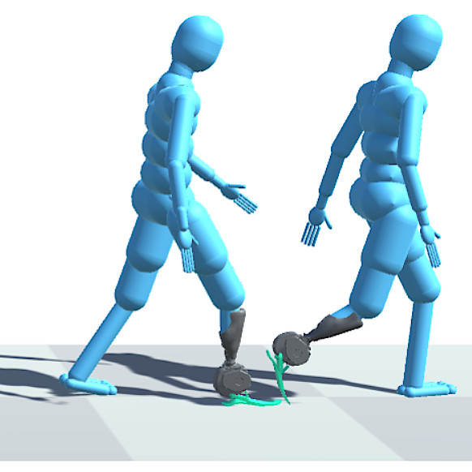

Balint Hodossy
Simulation Engineer, Imperial College London
I'm a Research Associate in Dario Farina's Neuromechanics and Rehabilitation Technology group. I'm from Hungary, but I've been living in London since 2016. My research interest is understanding human movement and build devices that support it.
I'd like to record what I've been up to on this site. If you'd prefer a summary, here's my CV.
Past Work
PhD Thesis
Written after my 4 year PhD at Imperial, titled "Learning Steps: Models of Intent-Driven Lower Limb Prosthesis Use". It essentially compiles the 4 manuscripts I wrote into one document, aiming to merge EMG-based intent estimation models with RL-trained locomotion models.
(It is shared under CC BY-NC 4.0.)
Click here for summaries of the technical chapters

Shared Autonomy Locomotion Synthesis With a Virtual Powered Prosthetic Ankle
The core part of my project! I used RL to learn a gait policy for a humanoid agent to follow arbitrary walking paths. Then I introduced a second agent that controlled one of the ankles - representing an intent driven prosthes.
Full article in TNSRE
Demo video
Leveraging High-Density EMG to Investigate Bipolar Electrode Placement for Gait Prediction Models
A much needed address of the location specificity of the muscle signal decoding methods I take in my EMG work. I was surprised that simply sampling electrode locations randomly during training ended up working so well!
Full article in THMS
High-Level Locomotion Intent Estimation From Electromyography and Body Posture
Translating my EMG models to high-level intent - so turns, stops, pivots instead of just straight walking. This abstract intent can be synthesized in simulation, which would mean not needing to simulate EMG for Sim2Real.
Read preprint
Towards a Virtual Gait Lab: Testing Prosthetics with Dynamically Simulated Subjects
I had the chance to work with Antonio Bicchi's lab - together with Matteo Crotti, we modelled the IIT SoftFoot. I extended my locomotion agents to obstacles and slopes, and evaluated the advantage of the compliant foot. Manuscript under review.
Read preprint
Master's Thesis
This was my first long-term project with biosignal processing, motion capture and machine learning, titled "Temporal Convolutional Network Based Trunk Muscle Signal
Decoding for Exoskeleton Control". For significant portion of it I discuss how to mitigate ECG corruption in trunk EMG - a serious issue of traditional EMG control. Turns out TCNs simply learn to filter it out on their own!
(It is shared under CC BY-NC 4.0.)
Read the Thesis
My other publications can be found on Scholar. Also, many of my projects are documented and available at github.com/Balint-H.
Shared Autonomy Locomotion Synthesis With a Virtual Powered Prosthetic Ankle
The core part of my project! I used RL to learn a gait policy for a humanoid agent to follow arbitrary walking paths. Then I introduced a second agent that controlled one of the ankles - representing an intent driven prosthes.
Full article in TNSRE Demo videoLeveraging High-Density EMG to Investigate Bipolar Electrode Placement for Gait Prediction Models
A much needed address of the location specificity of the muscle signal decoding methods I take in my EMG work. I was surprised that simply sampling electrode locations randomly during training ended up working so well!
Full article in THMSHigh-Level Locomotion Intent Estimation From Electromyography and Body Posture
Translating my EMG models to high-level intent - so turns, stops, pivots instead of just straight walking. This abstract intent can be synthesized in simulation, which would mean not needing to simulate EMG for Sim2Real.
Read preprintTowards a Virtual Gait Lab: Testing Prosthetics with Dynamically Simulated Subjects
I had the chance to work with Antonio Bicchi's lab - together with Matteo Crotti, we modelled the IIT SoftFoot. I extended my locomotion agents to obstacles and slopes, and evaluated the advantage of the compliant foot. Manuscript under review.
Read preprintMaster's Thesis
This was my first long-term project with biosignal processing, motion capture and machine learning, titled "Temporal Convolutional Network Based Trunk Muscle Signal
Decoding for Exoskeleton Control". For significant portion of it I discuss how to mitigate ECG corruption in trunk EMG - a serious issue of traditional EMG control. Turns out TCNs simply learn to filter it out on their own!
(It is shared under CC BY-NC 4.0.)
My other publications can be found on Scholar. Also, many of my projects are documented and available at github.com/Balint-H.
Side projects
There are some side projects that I'm particularly fond of, or are not listed on my GitHub.Click here to see them!
Simulating Wearable Robotics Workshop
This repo was the yearly evolving content for the workshop I hosted at the Summer School of Neurorehabilitation 2023-25. Now I use it to introduce RL and physics simulation methods to someone. Usually I don't end up using all the content that gathered up all the years - there's examples for simulating a robotic hand, finding a controller for a powered ankle exoskeleton, implementing LQR controllers for balancing and much more!
See GitHub Repo
MyoChallenge 24/25
I was part of the organizing team of the MyoChallenge in 2024 and 2025. These were programming competitions at NeurIPS, tasking participants with controlling complex musculoskeletal models to achieve various tasks. Each year I contributed to designing and developing one of the challenges. In 2024 I helped with the bimanual manipulation task, and in 2025 I helped with the tabletennis task.
Visit website
Preprint of MC24
Student Led Conference
During our first year of PhD students in my programme, we decided to organize a conference! Covid had different plans. We improvised, and managed to pivot to an online event. Served as great distraction during lockdown.
Visit the debrief page
Roleplaying games
Each year I try to host 1-2 stories as a game master for my friends, using adventure plotlines I've written over the years. I'm working on releasing a module along with handouts such maps, newspapers, posters and puzzles I've made!
Simulating Wearable Robotics Workshop
This repo was the yearly evolving content for the workshop I hosted at the Summer School of Neurorehabilitation 2023-25. Now I use it to introduce RL and physics simulation methods to someone. Usually I don't end up using all the content that gathered up all the years - there's examples for simulating a robotic hand, finding a controller for a powered ankle exoskeleton, implementing LQR controllers for balancing and much more!
See GitHub RepoMyoChallenge 24/25
I was part of the organizing team of the MyoChallenge in 2024 and 2025. These were programming competitions at NeurIPS, tasking participants with controlling complex musculoskeletal models to achieve various tasks. Each year I contributed to designing and developing one of the challenges. In 2024 I helped with the bimanual manipulation task, and in 2025 I helped with the tabletennis task.
Visit website Preprint of MC24Student Led Conference
During our first year of PhD students in my programme, we decided to organize a conference! Covid had different plans. We improvised, and managed to pivot to an online event. Served as great distraction during lockdown.
Visit the debrief pageRoleplaying games
Each year I try to host 1-2 stories as a game master for my friends, using adventure plotlines I've written over the years. I'm working on releasing a module along with handouts such maps, newspapers, posters and puzzles I've made!